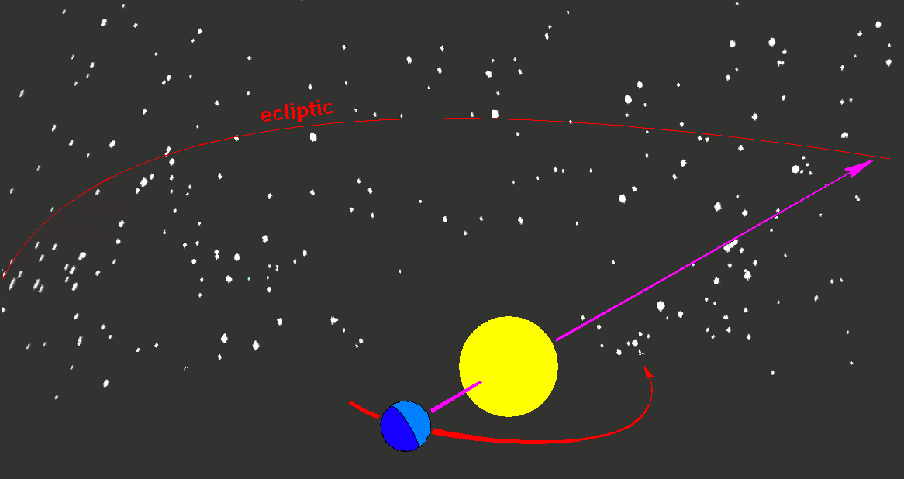

Chapter 2: Observing the Sky The Birth of Astronomy
ASTRONOMY
Goals for this Section
|

|
2.1 The Sky Above
Subsection slide
2.2 Ancient Astronomy
Measurement of Earth by Eratosthenes
Turn this into an ANIMATION with a slider for sun distance2.3 Astrology and Astronomy
What is the Ecliptic?
The path traced by Sol on the Celestial Sphere in one year.